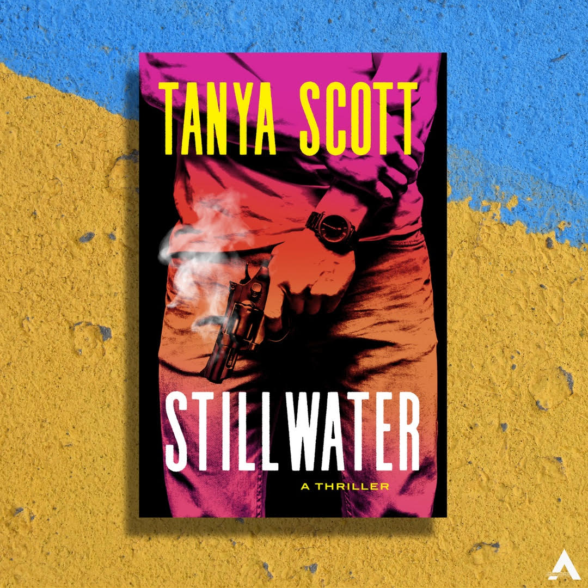

USA / Canada
Stillwater
When Jack Quinlan's mother dies of a drug overdose,
it's not his father that raises him, but Gus—a
ruthless crime boss who sees Jack for what he is:
a whip-smart kid with untapped potential. It doesn't
take long for Gus to forge Jack into a weapon.
But Jack was also self-aware enough to know where
this sort of life was going to lead him. When the
time was right, he got out. Or so he thought.
Seven years later, Jack is now Luke Harris, a regular
guy putting himself through college and aiming for
a real job and a real future. Falling in love. But
Jack's past isn't so easily forgotten, and the
bodies in his closet won't forgive him.
When Luke's newfound life collides with Gus's
underworld, survival becomes a deadly game. Luke
must resurrect his dormant skills and confront the
demons that threaten to consume him.
